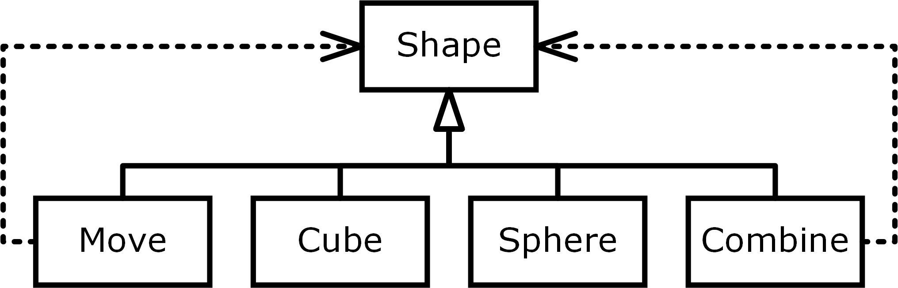

| Cube
| Sphere
| Move of Shape * float * float * float
| Combine of Shape * Shape
Full name: index.Shape
val float : value:'T -> float (requires member op_Explicit)
Full name: Microsoft.FSharp.Core.Operators.float
--------------------
type float = System.Double
Full name: Microsoft.FSharp.Core.float
--------------------
type float<'Measure> = float
Full name: Microsoft.FSharp.Core.float<_>
Programming
as Human Data Interaction
Dr Tomas Petricek
http://tomasp.net | tomas@tomasp.net | @tomaspetricek
Good morning! This talk combines two lines of thinking - it takes some ideas from a more theoretical programming language research that I've done in my PhD with and it combines them with more applied work on programming tools for data science that I've been doing recently.
Motivation
Easy, trustworthy and accessible data science
Vision
The essence of programming process
The more immediate applied part of the research is making it easier to use data - and I see making facts more accessible and trustworthy as a way in which a computer scientist can fight with dangerous trends in the society today.
The way data scientists program is very interesting from the programming language perspective, because it breaks some of the usual assumptions about programming.

The data science I have in mind is often quite simple and it is done for example by journalists. For example, this Guardian article is using data to illustrate inequality in the world. Do we trust the data? Yes, we do, because we are academics and we trust The Guardian!
But what if we wanted to verify this? That is quite hard - The Guardian says the source is the WorldBank, but how do we check that? The problem is that there is no source code!
SpreadsheetsEasy to use Simple problems only Not reproducible |
ProgrammingRequires expert skills Internet-scale Reproducible & open |
If you're doing data science, you can turn to the dark side and use spreadsheets. They are very easy to use, but you can only deal with small tabular data and the results are not reproducible.
If you want reproducibility and transparency, you can write a program. This gives you unlimited power, but it requires expert skills.
What makes spreadsheets successful?
How can programming tools learn?
Think of programming as interaction!
The interesting question for a programming language person is - what makes spreadsheets so successful? And more importantly, how can programming tools learn from spreadsheets? My key point is that we need to think about the process of programming. In spreadsheets, you work with data directly, which is quite different from how most programming systems work.
To illustrate, I'll show you how to get the inequality data from the WorldBank using an F# script. This is using Jupyter notebook, hosted on Microsoft which comes with the F# Data library that I created in Microsoft Research.
I wrote a PLDI paper about the theory behind this, which won a best paper award, but let's focus on the interactions - how I actually write the code.
DEMO
Inequality index using F# Data PLDI 2016
https://notebooks.azure.com/tomasp
Programming for data science
1 Data analytics is an interactive process
2 Program against data, not abstract symbols
As you can see in the demo, programming with data is a very interactive process. You write some code using autocomplete, run it, look at the results, then modify your code. This interactivity is super important. Also, you typically work with real or sample data directly. Your variables actually have values that you could use to help the programmer.
Research vision
Programming as human data interaction
My key research idea is that we need to focus on programming and see it as an interactive process of working with data - I'll focus on data, but the same applies to interactive theorem proving where you interact with your theorems.
The essence of human data interaction
Lambda calculus, but for programming interactions
Formal mathematical perspective
Human centric perspective
Enables new tools and methods
To understand programming properly, we need to find some small tractable model of it. In functional programming, we use lambda calculus to understand what is going on, so we need a similar essence of programming interactions. Then we can analyze it formally, use it to understand the human side of programming and use it as a basis for new tools and verification methods - and find new ways of working with data.
Formal mathematical perspective
1 Relative type safety
2 Provenance of interactionsICFP 2014 ICALP 2013
3 Properties of program construction
What can we say about interactions formally? There are standard ideas like type safety which gain a new meaning - because they might depend on data. We can also track provenance throughout the interaction. For example, if you make "copy and paste" a primitive, you can track provenance in ways that were previously impossible. I'm very interested in this, because my PhD research on coeffects can help with this. Finally, there are also new properties that are related to how programs can be constructed interactively.
Human centric perspective
1 Cognitive cost of interactions
2 Programming by direct manipulation
From the human centric perspective, we can look at cognitive cost of individual interactions. For example, selecting an option from an autocomplete - as you can do in F# Data - is easier than if you have to type a column name from scratch. Can we solve more complex problems with such simpler modes of interaction?
Second, we can also find ways to do some of programming not by writing code, but by manipulating with the data directly like in spreadsheets.
Research plan
Current and future research projects
I want to wrap up with a quick demo of my current work and a few of my short-term plans.
DEMO
Data exploration via dot-driven development ECOOP 2017
http://gamma.turing.ac.uk
This is a project I've been working on in the last year that makes simple data aggregations accessible to people like data journalists. I wrote an ECOOP paper about some of the theory behind this, but I'll show you a new more interactive version. This is all available online and you can play with this, but please after my demo :-).
Programming as human data interaction
1 Study programming, not programs
2 The essence of interactions
3 Easy, trustworthy data science and more
To summarize, I think a lot of the foundational programming language work has been focusing on languages and programs - and I want to extend that to cover programming as an interactive process. The way to do this is to think about the essence - or a minimal calculus - which then allows us to build new tools for easy trustworthy data science - and I think applications like data journalism make this an important research for our society.
My next three papers
Implementing live programming environments
Type checker and interpreter in TheGamma
Interactive AI assistants for data wrangling
Alan Turing Institute collaboration
History and philosophy of programming errors
Revised paper for ACM HOPL IV
http://tomasp.net | tomas@tomasp.net | @tomaspetricek
To wrap up, I'll end with a slide that lists the three next papers that I plan to write. The first one is about implementing live programming environments, which is surprisingly tricky and the second one is extending the data aggregation work to cover data cleaning with AI assistants. Finally, I talked about one of the things that I'm interested in, but I also work on philosophy and history of programming and I got invited to submit a paper to an ACM HOPL conference, so that's my third. I have ideas about coeffects too, but I only wanted to list three.
(slide intentionally left blank)
Domain specific languages
Software engineering (Year 2)
Dr Tomas Petricek
Dr Tomas Petricek
http://tomasp.net | tomas@tomasp.net | @tomaspetricek
For the teaching part of the presentation, I will talk about domain specific languages. I'm happy to teach theoretical lectures, but I picked this because I do a lot of talks at industry conferences and this is based on one such talk. It is a topic that would fit well as a more advanced topic at the end of the software engineering course and I like it because it is a nice way to relate some object-oriented and functional programming ideas.

Domain specific languages is an engineering idea that has become very popular in the last few years. It is equally popular in object-oriented languages like Java, but also in functional languages like Scala (for the JVM) and Haskell or F#.
Engineering problem
1 Repeated problem with numerous variations
2 Think tests, reports, contracts...
3 Accessible to non-programmers
When do you need domain specific languages? The typical case is when you have a large number of problems of a similar kind. Your management keeps coming with new reports or financial contracts to model. They are all very similar, but not quite the same. Ideally, you'd like to let your domain experts do most of the work on their own.
Build a language for a given domain!
The key idea is to build a small language for the given domain. Domain experts can then use it to define new tests, reports or whatever they need.
Domain specific languages
1 External – New language with custom syntax
2 Internal – Library in an existing language
There are two basic ways of doing this. You can create a new language - a good example is SQL which is a domain specific language for writing queries. Or you can write a library that looks almost like a language in an existing language. I'll focus on the second style.
DEMO
Language for composing 3D objects
http://www.fun3d.net
To give you an example, I'll show you a small domain specific language for composing 3D objects. This is a toy example, but it is not too far from reality.
This is a photo of the Louvre Museum in Abu Dhabi and the ceiling of the building was actually designed with F# - and you could nicely do that using a small domain specific language.
DSL = SYNTAX + MODEL
So, how do you build a domain specific language? There are two parts to this. First, you need to think about the model - what does the language describe. Then, you need to think about a nice syntax that will make it readable. I'll start with the syntax.
Functional languages
Custom operators and function composition
1: 2: |
|
Object-oriented languages
Fluent interfaces and the builder pattern
1: 2: |
|
In functional languages, you can often define a nice syntax by having a couple of operators and composing functions. Here, we have primitives like cone and cylinder, transformations using pipe and composition using dollar.
In object oriented languages, you can achieve very similar thing using "fluent interfaces" and dot. If you read the code, it is fairly readable and you can explain this to non-programmers.
DSL = SYNTAX + MODEL
The more important part of a domain specific language is the model. Here, you really need to think about what I want to describe in the language. This is the important part that you need to design carefully.
Object-oriented languages
Modelling using class hierarchies
In object oriented languages, you can model the domain as a class hierarchy. Using our shapes example, we will have an abstract base class for a shape and a couple of concrete shapes. Here, cube and sphere are primitives and move with combine are composed and contain other shapes.
Functional languages
Modelling using algebraic data types
1: 2: 3: 4: 5: |
|
The object oriented model directly maps to a functional model. In functional languages, you will model the same thing using algebraic data types. Here, I say that a shape is either a primitive (cube or sphere) or a more complex case - move contains another shape and an offset and combine combines two other shapes.
Object-orientedOne class per shape Operations as methods Easy to add cases |
FunctionalOne case per shape Operations separate Easy to add operations |
Add both cases and operations?
The expression problem!
How do these two styles compare? In the object-oriented style, you will have one class per shape. Operations like rendering will be written as abstract methods. This means that it is easy to add new cases - you just define a new class, but it is harder to add new methods, because you need to modify all classes.
In functional style, you define one case per shape and operations will be just functions that use pattern matching to handle all cases. This means that it is easy to add new operations, but if you add a new case, you need to modify all operations.
This is why it is nice to know both object oriented and functional programming! An interesting problem is if you wanted to add both cases and operations - I don't have the time for this, but if you are interested, search for "the expression problem" and you'll see there are some interesting solutions to this!
Domain specific languages
When? Repeated problem with variations
What? Financial contracts, queries, tests, etc.
How? Define model, provide readable syntax
Contacts for follow-up questions
tomas@tomasp.net |
@tomaspetricek
What should you remember from this lecture? Domain specific languages are useful if you have repeated problem with small variations. This includes things like financial and insurance contracts, but also queries for reports and tests. Domain specific languages make this easier, because you define a model with a nice syntax and you can then use the domain specific language to easily solve new instances of the problem.